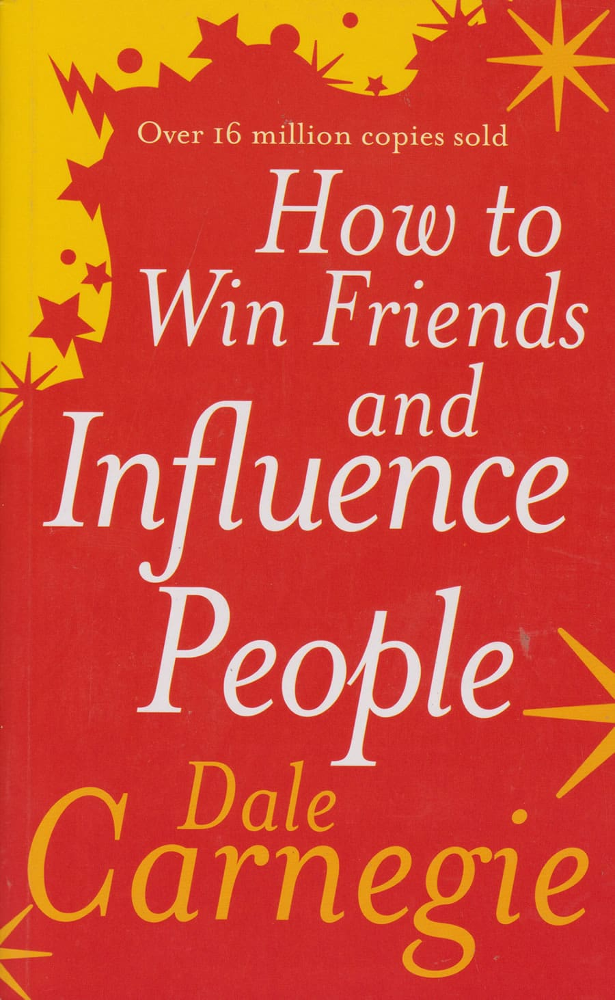

About
Welcome to the review by The Page Turners, where we dive deep into the world of books and explore the stories that shape our perspectives. Here, we take a closer look at both Who Moved My Cheese? by Spencer Johnson and Born a Crime by Trevor Noah, two powerful reads that examine change, identity, and resilience.
Who Moved My Cheese? offers insights into how we respond to change, while Born a Crime blends humor with history to showcase the author’s experiences growing up in apartheid South Africa. Our goal is to reflect on the lessons, emotions, and truths these books share, and to encourage thoughtful discussions about their impact.
These reviews are brought to you by The Page Turners group, a passionate team of readers: Elizabeth Barongo, Hewan Mehari, Nebyat Haftay, and Akeza Saloi. Together, we share different viewpoints and experiences to bring richer, more meaningful reflections on every book we explore.

✭ ✭ ✭ ✭ ✭
A philosophical novel that tells the story of Santiago, a Spanish shepherd who dreams of finding treasure in Egypt. Along the way, he learns deep life lessons about following one’s dreams, listening to one’s heart, and recognizing the spiritual wisdom in everyday life.
✭ ✭ ✭ ✭ ✭
This novel follows Adunni, a young Nigerian girl determined to get an education and find her voice in a society that constantly tries to silence her. Despite facing poverty, child marriage, and domestic servitude, she remains hopeful and resilient in her quest for freedom and self-expression.

✭ ✭ ✭ ✭ ✭
A classic self-help book that offers timeless advice on communication, leadership, and relationship-building. Through practical principles and real-life examples, Carnegie teaches readers how to make people like them, handle criticism, and influence others positively.